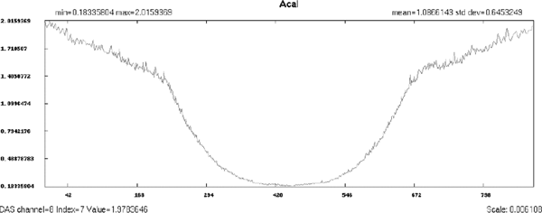
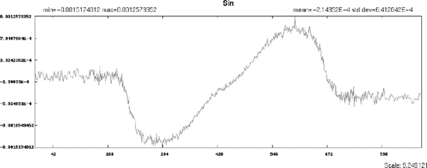
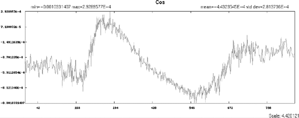
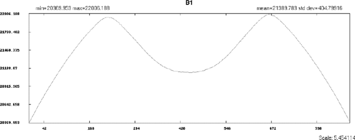
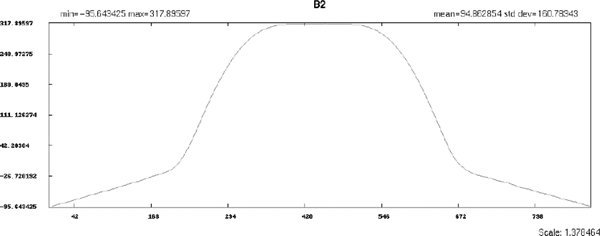
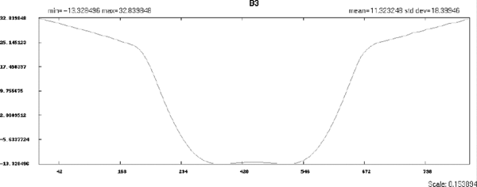
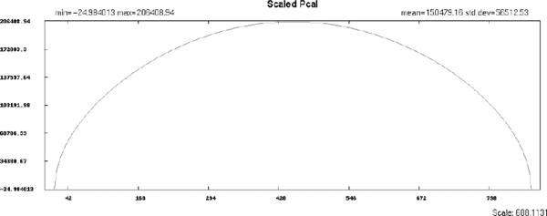
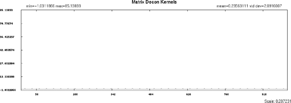
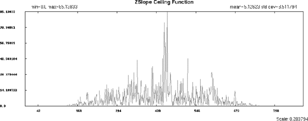
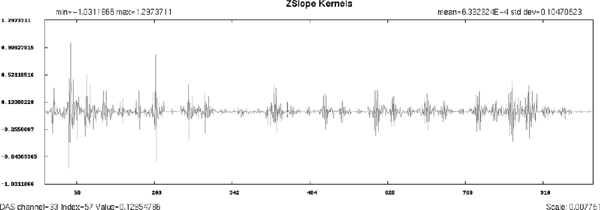

Operating Documentation
Direction 5196839-800, Rev# 6
RT16 and Xtra Service Info Adv
Operating Documentation |
Illustration 1: Calibration Vector Acal / Head Filter

Illustration 2: Calibration Vector Sin / Head Filter

Illustration 3: Calibration Vector Cosine / Head Filter

Illustration 4: Calibration Vector "B1" / Head Filter

Illustration 5: Calibration Vector "B2" / Head Filter

Illustration 6: Calibration Vector "B3" / Head Filter

Illustration 7: Scaled P-Cal - Head Filter

Illustration 8: Matrix DeCon Kernels

Illustration 9: Z-Slope Cal / Ceiling Function

Illustration 10: Z-Slope Cal / Z-Slope Kernels
